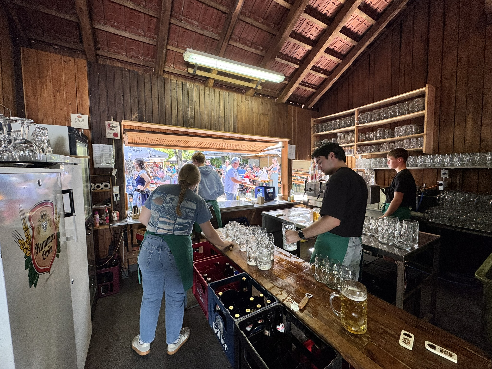

Metzgerei-Spezialitäten
Bratwürste, Fleisch, Brotzeiten und bayerische Klassiker aus Familienhand.

Metzgerei & Festküche am Hahnbacher Berg
Neun Tage Sommer, Kirchfest und bayerische Gastlichkeit: mit eigenen Metzgerei-Spezialitäten, regionalem Bier, Kaffee und Kuchen sowie Käse und Obazda.
Angebot
Bratwürste, Fleisch, Brotzeiten und bayerische Klassiker aus Familienhand.
Regionale Getränke und Biergarten-Atmosphäre für Familien, Vereine und Gruppen.
Nachmittags Kaffee und Kuchen, dazu Käse-Spezialitäten, Obazda und kleine Mitnahmeangebote.

Geschichte
Was mit dem kirchlichen Fest am Hahnbacher Berg begann, ist heute ein Treffpunkt für Kirchgänger, regionale Gemeinschaften, Betriebe, Familien und Stammgäste.
Das alte rote und blaue Schild bleibt als Stück Familiengeschichte sichtbar, während das blaue Siegert-Hahnbach-Logo den heutigen Auftritt prägt.
Reservierung
Für den Prototyp reicht bewusst ein einfacher Kontaktbereich. Ein Formular kann später ergänzt werden, wenn Datenschutz und Ablauf sauber geklärt sind.
Telefon+49 0000 000000
E-Mailreservierung@siegert-hahnbach.de
OrtHahnbacher Berg, 92256 Hahnbach